Madre Cinerea
Tiefling, guida dei Custodi della Cenere.
Calma, gentile, convincente: non alza mai la voce. Vuole l’eruzione.
Segreto DMÈ stata lei a guidare i Custodi nella cripta e a spezzare il primo dei tre anelli del sigillo.
Pocket GM Screen l’ho creato per il mio tavolo: prepari la sessione, la giochi e ne tieni traccia nello stesso posto. Si apre nel browser, senza installare nulla.

Tutto ciò che scrivi resta collegato. Segui il segnaposto: dalla nota alla scheda, dalla scheda alla scena.
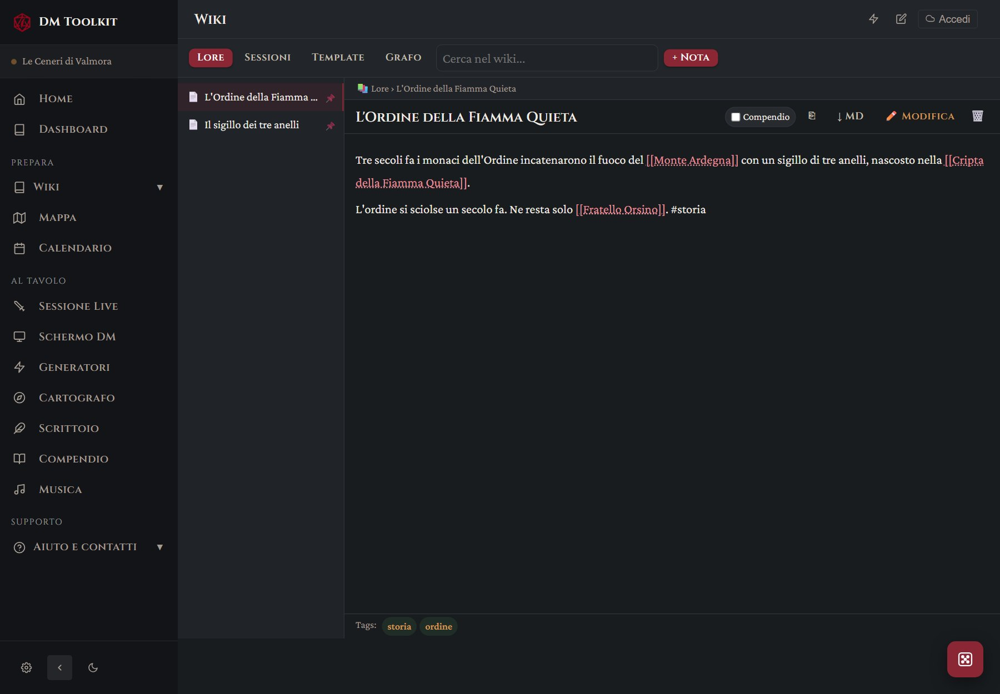

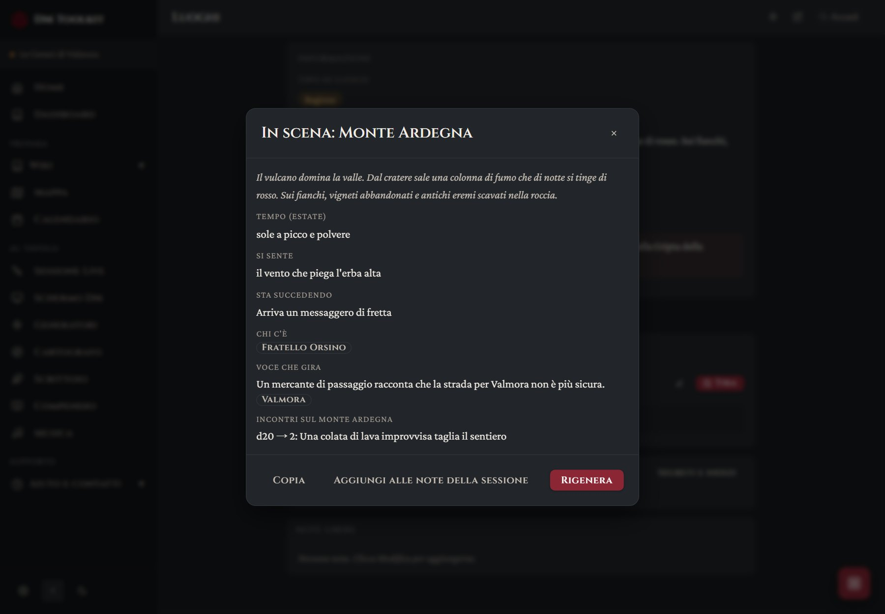
La sessione resta in una sola schermata, con la tua musica che continua mentre cambi pagina, e alla fine si scrive quasi da sola.
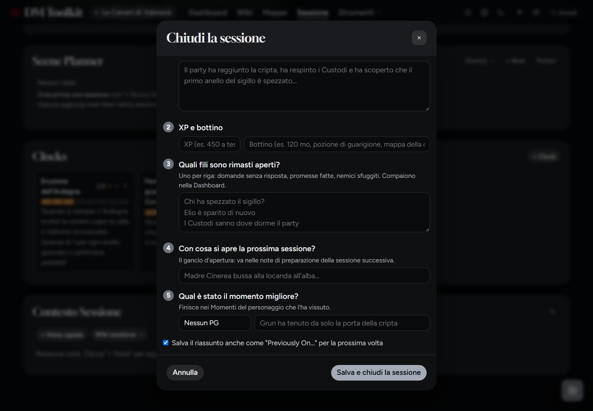

Scegli un segnaposto e scendi di livello. La mappa nuova nasce già collegata a quella sopra, con nomi e distanze. Traccia un percorso a tappe e vedi quanti giorni servono a piedi, a cavallo o per mare, oppure esplora esagono per esagono. Dungeon e case vanno anche sui tavoli virtuali o in stampa, in scala per le miniature.
Regno di Montealta, codice tavolo1
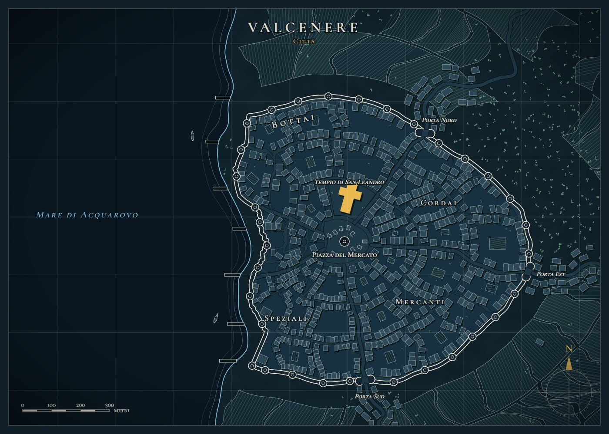
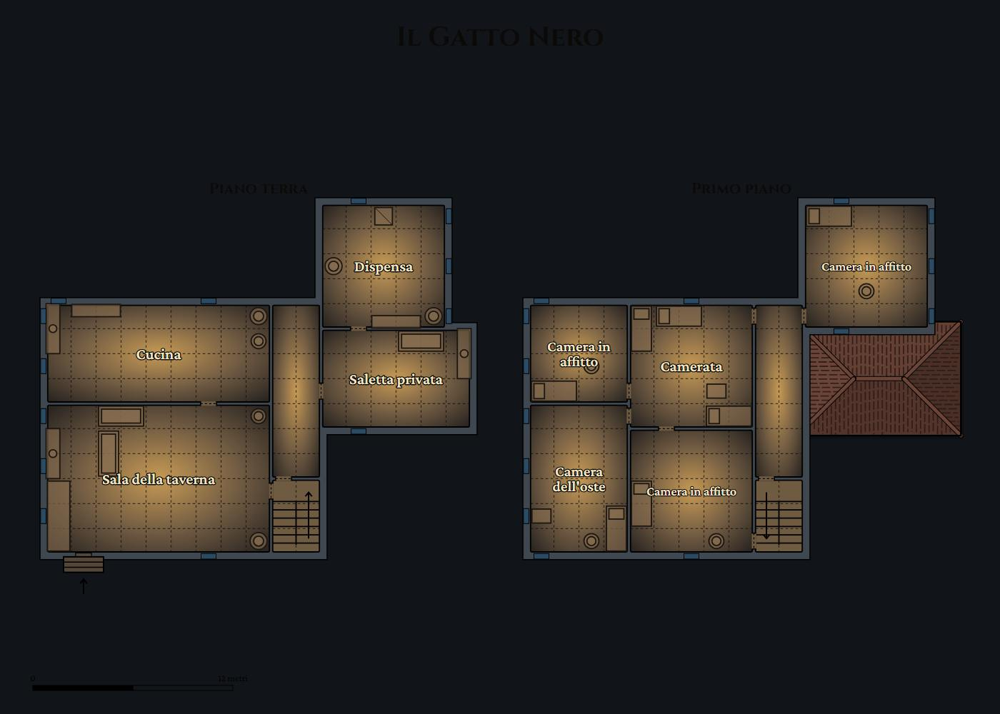
Dodici scene, dal bosco alla cripta, su prato, erba secca, fango, neve o deserto. Terreni e oggetti dipinti, con i quadretti da 1,5 m. Se un carro o una tenda non sta dove vuoi, lo sposti con un dito.
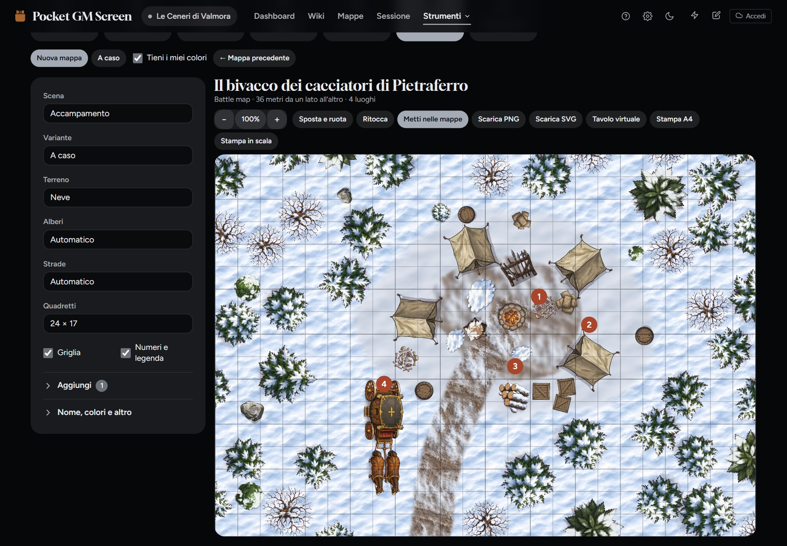

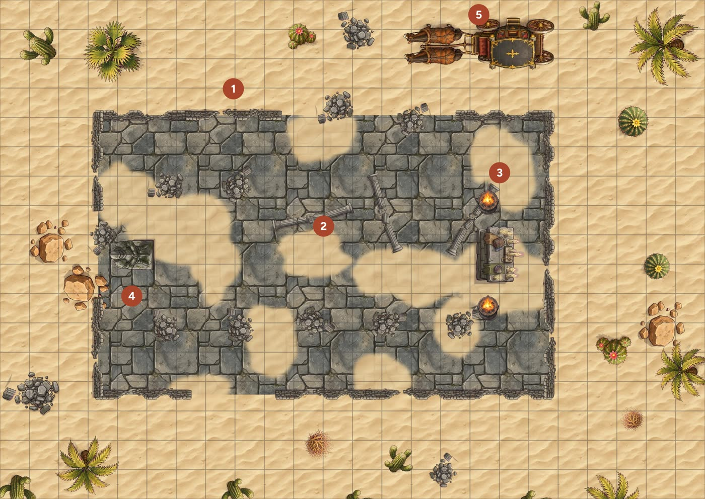
Quando i giocatori vanno dove non avevi previsto, la risposta è a un tocco.

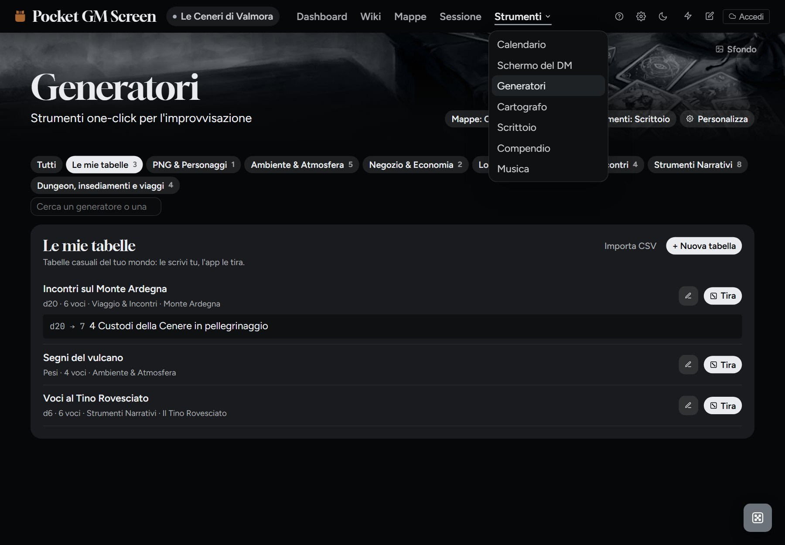
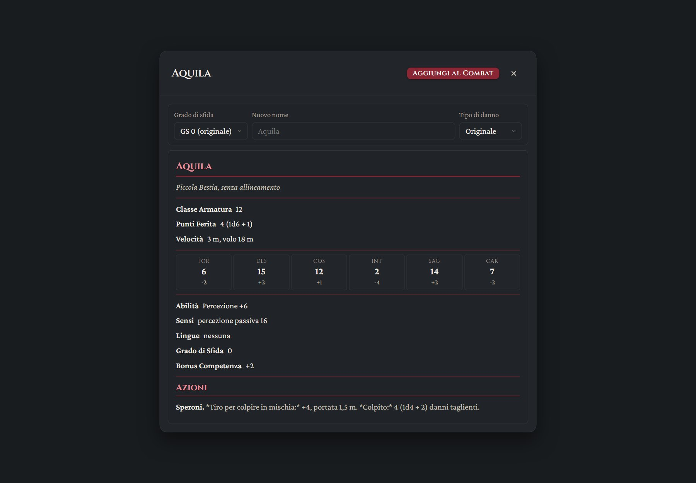
Una playlist per la taverna, una per la battaglia, una per il tema del nemico. Le prepari prima, e al tavolo sono a un tocco.
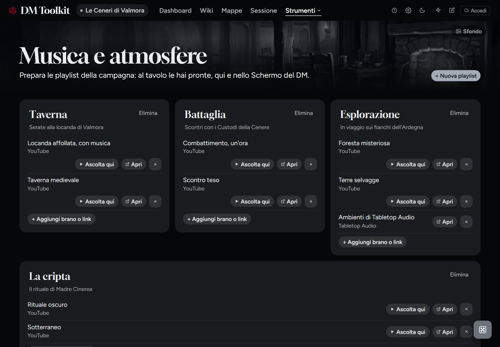
Lettere sigillate, taglie, editti, gazzette, contratti e mappe del tesoro, scritti con i nomi della tua campagna o da te. Se hai già uno stemma, caricalo nella scheda della fazione.
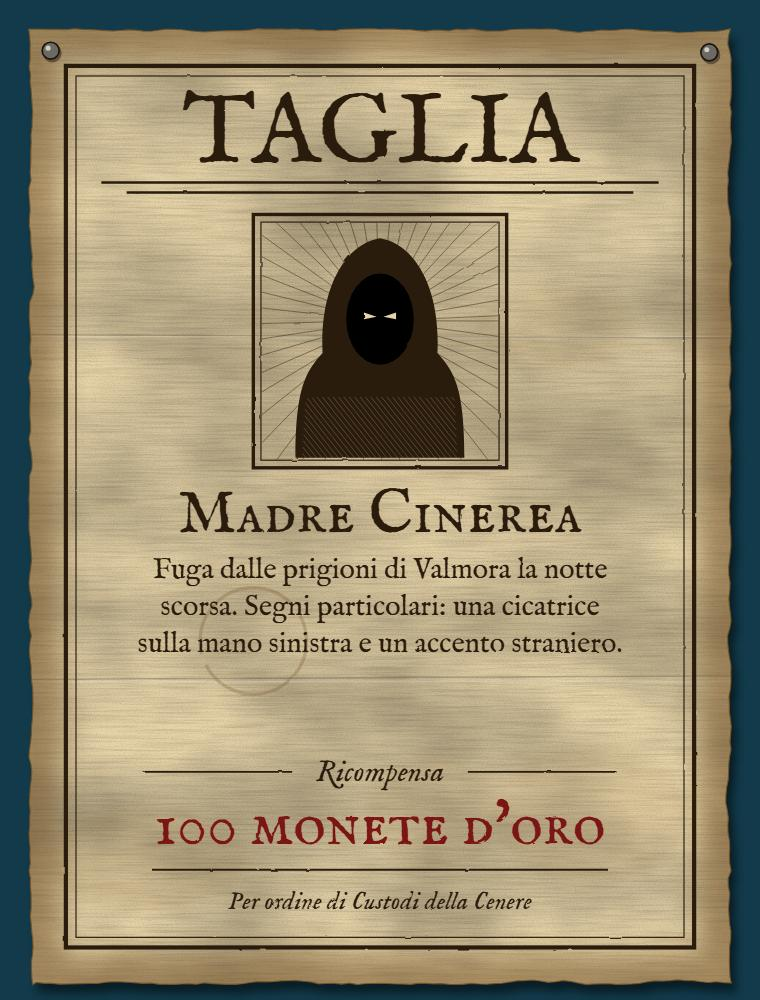
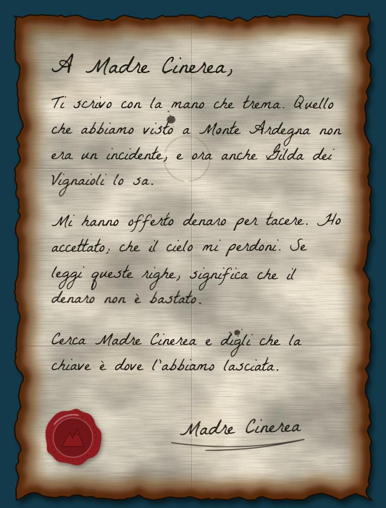
I giocatori ricevono una copia separata con quello che scegli tu, senza segreti e motivazioni dei PNG. Prova a cambiare vista.
Tiefling, guida dei Custodi della Cenere.
Calma, gentile, convincente: non alza mai la voce. Vuole l’eruzione.